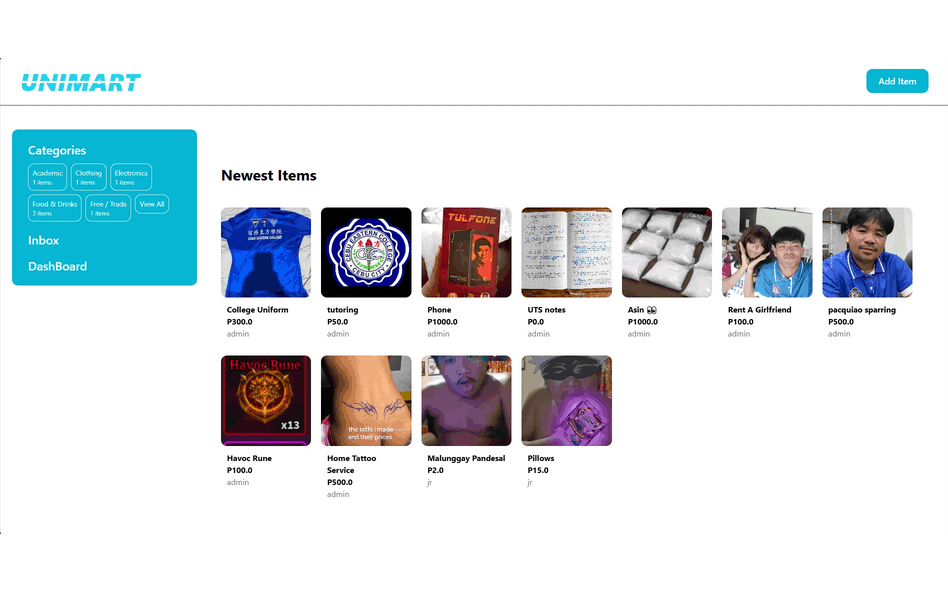

Academic project
UniMart
A campus marketplace web application built for students to buy and sell items within their school community. Users can list products with photos, browse and filter by category, and message each other about an item.
Highlights
- User registration and authentication
- Product listings with image uploads
- Search, category filtering, and sorting
- Messaging between buyers and sellers
- Personal dashboard for managing listings